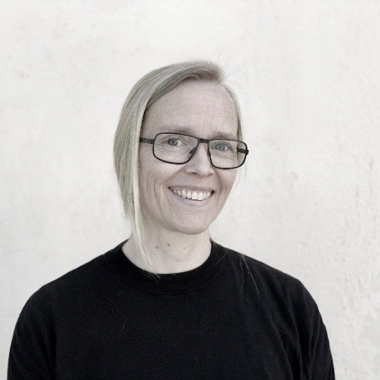
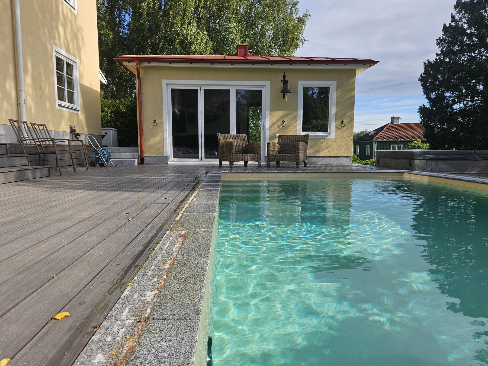

Om studion / Susanna Sjödin
Nära människan.
Lyhörd för platsen.
En personlig arkitektstudio med intresse för det som redan finns – och för möjligheterna att skapa något nytt.

Susanna Sjödin · Arkitekt SAR/MSASjödin Arkitektur · Sedan 2011
Ett personligt
engagemang.
Jag heter Susanna Sjödin och arbetar med arkitektur för bostäder och andra miljöer där människor tillbringar sin vardag.
Jag driver Sjödin Arkitektur sedan 2011 och har erfarenhet av både nya byggnader och ombyggnader. Min vidareutbildning inom ombyggnadskultur och restaureringskonst fördjupar arbetet med befintliga hus och miljöer.
Som beställare har du en nära kontakt med mig. Jag följer projektets frågor från idé och gestaltning till handlingar och samordning. När uppdraget behöver fler kompetenser samarbetar jag med andra arkitekter och specialister.
Susanna SjödinTa vara på det
som är.
Se det som kan bli.
En förändring behöver börja med förståelse.
Platsens historia, byggnadens karaktär och dina behov ger riktning åt arbetet. Att behålla och utveckla befintliga kvaliteter är en central del av studions uppdrag.
Vid nybyggnad vägs terräng, ljus och omgivning samman med hur huset ska fungera. Funktion, gestaltning, ekonomi och långsiktighet behöver få plats i samma samtal.
Se hur tankarna blir arkitektur
Lyssna först.
Förstå sammanhanget, människorna och byggnaden innan vi föreslår en förändring.
Rita för livet.
Låt funktion, dagsljus och rörelse genom rummen ge form åt arkitekturen.
Tänk längre.
Ta vara på befintliga resurser och utveckla lösningar med omsorg om hur de ska användas.
Vad vill du
ge plats åt?
Ett nytt hem, fler möjligheter i ett befintligt hus eller nästa steg för en fastighet. Berätta om dina tankar.
Prata med Susanna